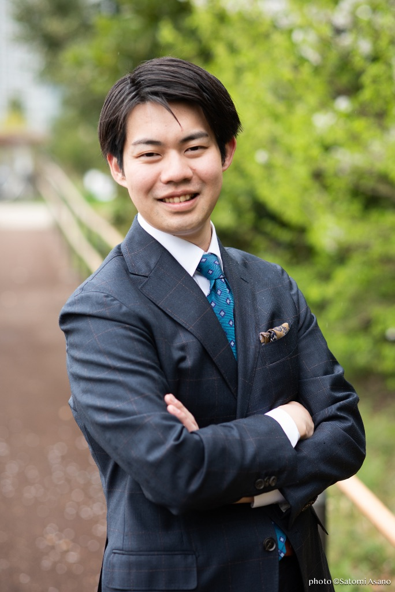

Story
「苦しんだからこそ、寄り添える」

ちゃまるん（レイ）SNSマーケティング・事業開発／講師
20代後半のある日、私はうつ病で休職し、家族とも別居することになりました。営業の仕事でも、立ち上げた事業でも、うまくいかない。「自分には何の力もない」——無力感と自己否定の中で、しばらく動けませんでした。
でも、本当に必要だったのは
「頑張ること」ではなく、
「自分を、赦すこと」でした。
内面と静かに対話し、少しずつ自分を受け入れていく。その過程で気づいたのは、繊細さは弱さではなく武器だということ。やさしさは、きれいごとではなく戦略になるということ。無理はしない。でも、歩みは止めない。そうやって、私は回復してきました。
だからこそ、私は信じています。B型に通う方も、企業で生きづらさを抱える方も、決して力がないわけじゃない。まだ、合うルートに出会えていないだけ。その人の可能性を、私は本気で信じられる。苦しんだ経験は、そのための資格になりました。
繊細さは武器
やさしさは戦略
無理しないけど、歩みは止めない
誰かのための前に、自分のために